双湖与峡谷
喀纳斯湖、神仙湾、月亮湾、卧龙湾，赛里木湖自驾环湖；游览世界魔鬼城与独山子大峡谷。
 2—6 人团
2—6 人团喀纳斯湖、神仙湾、月亮湾、卧龙湾，赛里木湖自驾环湖；游览世界魔鬼城与独山子大峡谷。
禾木住一晚，晨起可步行前往观景台。全程 4 晚四钻酒店、1 晚景区木屋、2 晚舒适酒店。
每人赠送 9 张简修照片，含简单民族服饰或配饰，不含妆造；赛湖蓝境穿越视频一团一条。
2 人成行，6 人封顶。七座营运商务车、1+1 独立座椅，乌鲁木齐 24 小时接送机／站。


乌鲁木齐两晚、阿勒泰／北屯一晚、精河一晚
禾木景区特色小木屋
布尔津及奎屯／独山子／乌苏
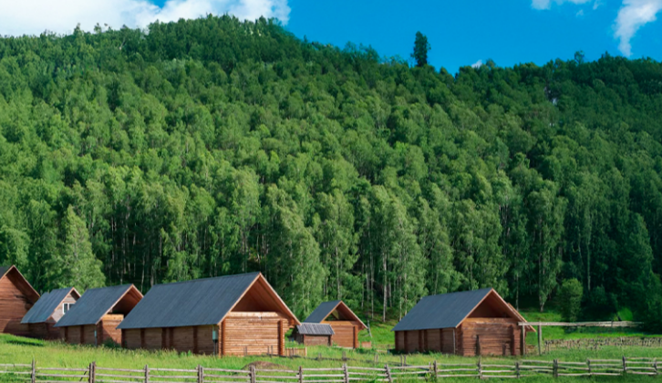
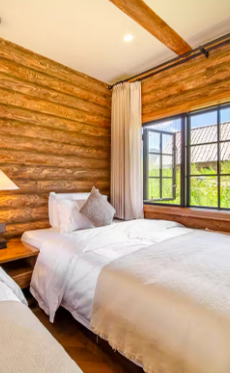
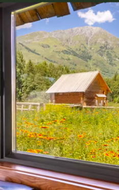
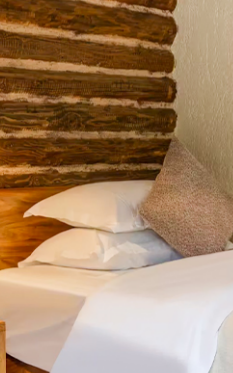
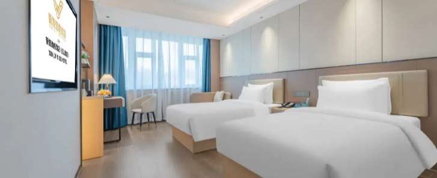
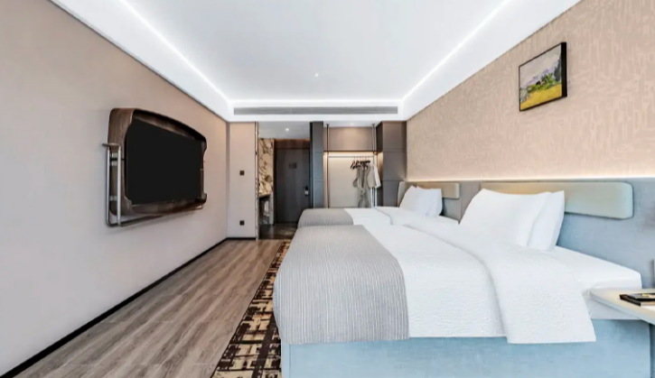
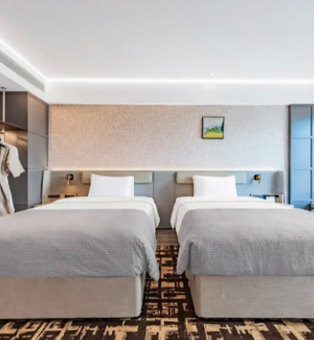
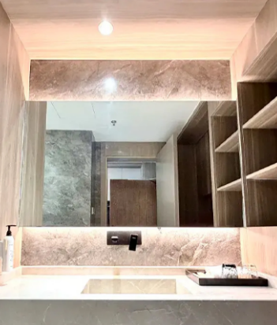
以下酒店或同级，不可指定。
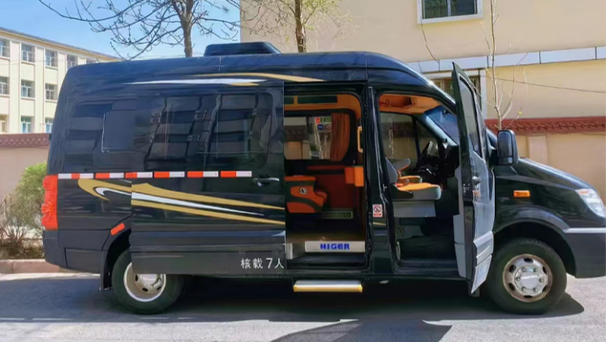
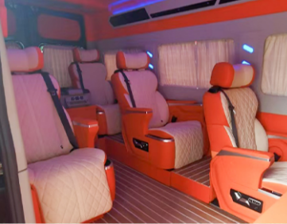
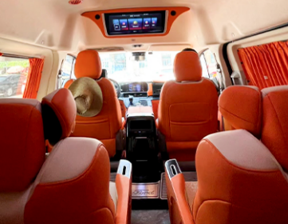
当地行程使用具营运资质的七座商务车，1+1 独立座椅，不指定车型。司机负责驾驶、接待衔接及向导服务，不配导游，不提供详细讲解。
接送机／站不限定车型，通常三人以下用普通五座车、四人以上用普通商务车。拼车游客每日轮换座位；建议每人携带一个 28 寸以下行李箱。
抵达乌鲁木齐机场或火车站，安排 24 小时接机／站，乘车前往酒店。管家提前联系，告知次日出发时间、出团信息及注意事项；酒店一般 14:00 后入住，早到可寄存行李、自由活动。
住：乌鲁木齐 · 携程四钻早餐后出发。9 月 19 日前落地团期安排新疆大剧院“西域婚礼”，其中 9 月 17 日落地团期不安排。随后穿越 S21 沙漠公路，游览克拉美丽沙山公园，途观乌伦古湖，晚入住阿勒泰或北屯。
参考车程：530 公里 / 6.5 小时早餐后经阿禾公路前往禾木，沿途欣赏峡谷、森林、河流、雪山与草原。抵达门票站后换乘区间车进入禾木村，安排轻摄影旅拍，每人 9 张简修照片，含简单民族服饰或配饰、不含妆造。入住景区木屋后自由活动。
阿禾公路如遇天气或交通管制临时关闭，改经布尔津—海流滩方向绕行至禾木，无费用可退。景区换乘较多，建议将当晚换洗衣物和必需品放入双肩包，轻装进入景区。
参考车程：300 公里 / 5.5 小时早餐自理，上午在禾木自由活动，可步行约 40 分钟到达观景台，俯瞰村落晨景。随后前往喀纳斯门票站，换乘区间车游览喀纳斯湖，可沿湖漫步，游船另付费。出景区时游览神仙湾、月亮湾、卧龙湾，之后前往布尔津入住。
参考车程：约 3.5 小时早餐后前往世界魔鬼城，游览乌尔禾雅丹地貌。9 月 10 日至 10 月 6 日落地团期赠送安排北疆野生胡杨林，不参加不退费用。游览后乘车前往奎屯、独山子或乌苏入住。
参考车程：570 公里 / 6 小时乘车前往赛里木湖，自驾环湖。从月亮湾、亲水滩、点将台、西海草原、克勒涌珠、金花紫卉、松树头及网红 S 弯中精选 3—4 个点位停留。安排赛湖蓝境穿越视频，一团一条；因天气无法安排时可更换为网红坦克跟车视频，赠送项目不参加不退费用。游览后前往精河入住。
参考车程：500 公里 / 6 小时早餐后前往独山子大峡谷，在峡谷边缘及观景平台欣赏崖壁与岩石纹理。地轨滑车、步步惊心、玻璃桥等景区娱乐项目费用自理。午餐自理，随后返回乌鲁木齐，入住近大巴扎的四钻酒店。
参考车程：500 公里 / 6 小时早餐后按航班或车次安排送机／站。下午或晚间出发的游客，请在 14:00 前办理退房；送机一般提前 3—4 小时，请提前与管家核对集合时间。
住：返程日 · 不含住宿| 项目 | 禾木 | 喀纳斯 | 赛里木湖 | 世界魔鬼城 | 合计 |
|---|---|---|---|---|---|
| 门票及区间车价格 | 75 | 230 | 100 | 62 | 467 |
| 7—18 岁学生票退费 | 25 | 80 | 30 | 20 | 155 |
| 60—64 岁退费 | 25 | 80 | 30 | 20 | 155 |
| 65 岁以上退费 | 62.5 | 195 | 62.5 | 51 | 371 |
| 军官证退费 | 50 | 195 | 30 | 51 | 326 |
军官证因军种不同，退费各异。持优惠证件请在出发前告知管家，经景区核验可享优惠的，行程结束后统一退还对应差额。